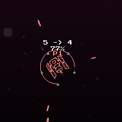
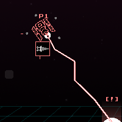

the
Collector


$mainframe /collector stats
Overview
Health
Weight
Speed
Fire Rate
Fire Speed
Damage
Charge
Ability-focused Offense, Utility
115
15
3
15
10
0.8
1
The Collector is a sturdy, medium-weight spaceship that fights enemies with summoned space debris. Hitting your opponent consistently builds up energy, which releases a long bolt of energy that opens portals along the edge of the arena. Debris flies in from these openings, which can be picked up and re-launched as an offensive projectile.
With good aim, good juggling -- and a little bit of awareness on what debris spawns -- a Collector's pilot can rack up damage quickly. Collectors that land many shots and stop to store their unused energy reduce the time between portal spawns. If left unchecked, a Collector becomes the conjurer of a deadly debris storm with the ability to open three portals at once.
$mainframe /collector abilities
Warp Drive / Junk Draw
Innate
The Collector derives its power from an onboard warp drive. The drive begins the match unpowered, its required energy represented by 5 rotating circles. Each bullet fired from the Collector that hits an enemy ship charges the drive.
When the drive is filled, the Collector briefly charges before discharging a bolt of concentrated energy. The bolt travels instantenously to the edge of the playing field and opens a portal. 1 to 3 exclamation points denote the rarity of the summon. After 2 seconds, one or more pieces of junk will come out of the portal. If touched by the Collector, the junk is collected. 1 piece at a time can be held in the Collector's inventory.
When immobile, a piece of junk that remains on the playing field for 1 second will despawn.
Hold Fire
Movement Option
While this button is held, the Collector will not deploy primary fire while aiming with the Right Stick.
Gravity Discharge
Basic Ability: 25 Power (Single Cast)
The Collector fires 5 bullets in a 15-degree cone that deal 4 damage each and inflict 0.25 seconds of hitstun. The knockback applied by this spreadshot is always straight downwards.
Junk Toss
Combat Option
If the Collector is holding onto a piece of junk, it will be launched. Junk can be collected again after 0.25 seconds of initial travel.
Power Store / Junk Storm
Strong Ability: 75+ Power (Drain Cast), 75 Power (Single Cast)
The Collector enters a low-energy state, losing the ability to shoot primary fire. During this time, the Collector moves all collected Power into its primary energy repository.
The repository holds 140 Energy, and power is converted at the rate of 21 Power to per second (0.35 Power/frame) to 30 Energy (0.50 Energy/frame). When the repository is maxed out, the number of primary fire rounds needed to trigger Junk Draw is reduced by 1 (down to 2, from a starting amount of 5).
After reaching a two-round charge for Junk Draw, Power Store is replaced by Junk Storm. Upon casting, the Collector fires 3 bolts in a 15-degree cone, each of which creates a portal at the edge of the arena.
>> APPENDIX 1: Junk Spawns and Properties
$mainframe /collector lore
Originally developed in conjunction with atmospheric scientists, the Autonomous Space Debris Tracker-100 was an entry series of unmanned, remotely-observed satellites used to map the locations of debris in low orbit around Earth. As the Deep Space Exploration Initiative took off, the ASDT-100 series was repurposed to map the stars. The cartographic data stored onboard became a target for enemy factions and alien lifeforms, and many early exploration units were captured and ultimately destroyed.
In a bid to better protect the ASDT-100 model, scientists began incorporating acquired warp-drive technology as a means of offense - one that usually created more debris, but proved effective at keeping assailants at bay.